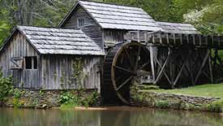

Look to us for the Weather
Metorologist want to be: Kayrene Kelley
City of Franklin
Today's Weather
- High: 90℉
- Low: 66℉
- Precipitation: 0%
- Wind Speed: 5 mpg SW
10 Day Forecast
| Day 1 | Day 2 | Day 3 | Day 4 | Day 5 | Day 6 | Day 7 | Day 8 | Day 9 | Day 10 |
|---|---|---|---|---|---|---|---|---|---|
| 89°F | 87°F | 78°F | 75°F | 72°F | 72°F | 79°F | 83°F | 85°F | 89°F |
Weather Icon
This day in History
On this day in history the Franklin Mill was established. This new business helped the people of Franklin became more self reliant. With a mill at their disposal product could be ground without sending it to another town to process. The closest mill was a weeks travel away, making the trip a two week travel time in addition to the time it takes to make the desired product. The Franklin mill not only cut down travel time, it gave the man of the house a way to continue working his farm while product was being milled. It helped save some crops.